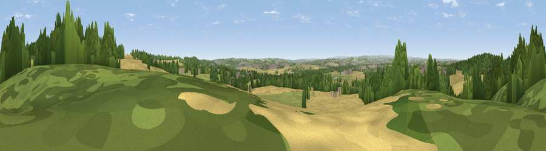

Viewpoint near Barnburgh
#22204 in England · top 35% of its area beats it · near BarnburghThe view, rendered

A 360° render of this exact spot computed from the terrain model, tree cover and land cover — summer colours, afternoon light, calibrated against photographs of famous viewpoints. Real trees, hedges and buildings will differ in detail.
The panorama
Grey silhouette: terrain skyline in each direction (720 bearings, Earth curvature and refraction included). Dashed green: skyline with trees (+15 m) and buildings (+8 m) as obstacles. Blue strip: how far the ground is visible on each bearing.
Where the view opens
Wedge length = distance to the farthest visible ground on that bearing (vegetation-aware). Rings at 10, 25 and 50 km.
What fills the view
37% woodland · 35% cropland · 19% grassland · 9% built-up
Angular shares of the visible panorama (visual magnitude), not map area. Landscape diversity 0.56 (0–1 Shannon).
Key numbers
More beautiful places nearby
The staircase of upgrades: each row has a higher view potential than everything closer. Driving times are estimates from straight-line distance, calibrated against real road routing — check an actual route before setting out.
| Place | Direction | Drive | Score |
|---|---|---|---|
| Viewpoint near Barnburgh | E · 2 km | ~4 min | 55.9 |
| Viewpoint near High Melton | SE · 3 km | ~7 min | 58.5 |
| Viewpoint near Cadeby | SE · 4 km | ~10 min | 60.5 |
| Viewpoint near Grimethorpe | NW · 8 km | ~16 min | 63.8 |
| Hoober Stand | SW · 9 km | ~18 min | 64.2 |
| Hoyland Lowe | WSW · 12 km | ~22 min | 68.7 |
| Viewpoint near Maltby | SSE · 13 km | ~24 min | 70.8 |
| Viewpoint near Whitley | WSW · 18 km | ~31 min | 72.1 |
53.53116, -1.27997 · source: screening · position refined by local search. Computed location — check access rights before visiting.